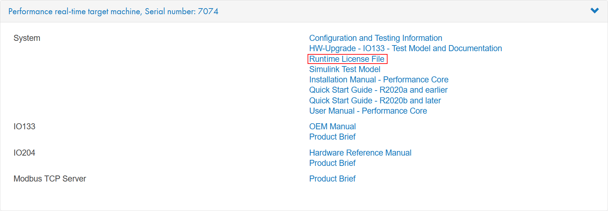

Speedgoat Tools
Speedgoat Tools — Runtime Licensing
Runtime Licensing
Some I/O modules and protocols require a runtime license on the target machine.
During model startup, the corresponding driver blocks search the machine’s file system for a license file. The I/O modules or protocols used in the Simulink model must be listed in that file. Furthermore, the number of licenses for each I/O module or protocol must match the number of I/O module (DUTs) or protocol nodes (clients, servers, etc.) in the model. If the license file does not exist or the licenses do not match the I/O modules or protocols, and the number of nodes used in the model, an error is posted in the machine’s system log.
There is only one license file per machine that contains all the licenses purchased. The name of this license file and the content of the file itself must include the machine’s serial number.
For new machines, the license file is preinstalled. If you obtain a specific license for an existing machine at a later point, you can install the license file yourself.
![[Note]](images/note.png) | Note |
|---|---|
To purchase runtime licenses, please contact Speedgoat Sales. |
Download your license file from the customer portal. In the downloads section: navigate to the respective real-time target machine and click Runtime License File. The file is located either in the System section or the respective I/O module and protocol sections.

In MATLAB, navigate to the folder where you saved the file. Extract the file if it is a .zip. The license filename has the format sgXXXX.lic and contains the serial number of the corresponding machine (sg7074.lic, for example). You can check whether the file does indeed belong to your machine by reading the machine’s serial number:
>> licObj = speedgoat.License;
>> licObj.getSerialNumber
ans =
'7074'Enter the following in the MATLAB command window to transfer the runtime license file to the target machine:
>> licObj.update('FileName', 'sg7074.lic');
sg7074.lic has been successfully updated on your target machine
Run a model on the target that uses the corresponding I/O module or protocol driver blocks and check the system log for error messages.
Refer to the speedgoat.License API to learn more about handling Speedgoat runtime license files in MATLAB.